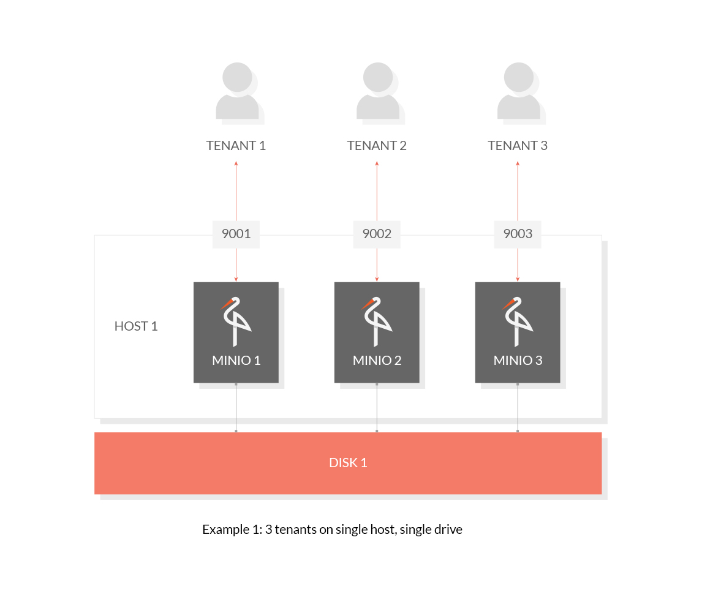
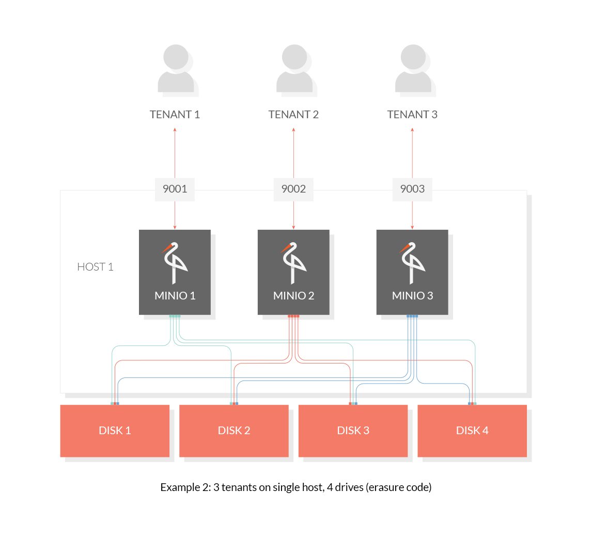

1. 部署调研
1.1. 环境准备
环境准备，主要是指环境配置、资源包下载/安装部署等内容。
1.1.1. 资源下载
### Minio下载：RELEASE.2020-06-01T17-28-03Z
wget https://dl.min.io/server/minio/release/linux-amd64/minio
### MC下载: RELEASE.2020-05-28T23-43-36Z
wget https://dl.min.io/client/mc/release/linux-amd64/mc
|
资源下载(更新于2020-06-02)：
Minio(Server) MC(Client)
1.1.2. 添加执行权限
### 最好存放在统一的位置，比如：/opt/soft/minio/ 等
chmod +x mc
chmod +x minio
|
1.2. 部署模式
这里主要介绍实战部署：参考官方文档，进行部署搭建。
1.2.1. 单机部署
单机部署主要包括两种模式：单机单租户、单机多租户。
1.2.1.1. 单机单租户
单机部署非常简单
1. 启动服务：./minio server /data1 /data2 ...
2. 查看服务：http://host1:9000/
|
主要架构如下所示：

1.2.1.2. 单机多租户
单机多租户，可以配置为多租户多次盘、多租户单磁盘等模式。

1.2.2. 分布式部署
分布式部署可以部署为单租户多机、多租户多机等情形，主要架构如下所示

部署测试
## host1 ~ host4 : 配置启动
echo "" > nohup.out
export MINIO_ACCESS_KEY=minioadmin
export MINIO_SECRET_KEY=minioadmin
nohup /root/minio server --address :9002 http://host1/data5 http://host2/data5 http://host3/data5 http://host4/data5 &
|
使用s3-benchmark压测结果
## 压测命令
./s3-benchmark -a minioadmin -s minioadmin -b test -t 10 -u http://host1:9002 -l 5 -z "1MB"
## 压测结果
Parameters: url=http://host1:9002, bucket=test, duration=60, threads=10, loops=5, size=1MB
Fri, 05 Jun 2020 20:01:13 GMT Loop 1: PUT time 61.6 secs, objects = 213, speed = 3.5MB/sec, 3.5 operations/sec.
Fri, 05 Jun 2020 20:02:14 GMT Loop 1: GET time 61.0 secs, objects = 395, speed = 6.5MB/sec, 6.5 operations/sec.
Fri, 05 Jun 2020 20:02:15 GMT Loop 1: DELETE time 0.9 secs, 225.1 operations/sec.
Fri, 05 Jun 2020 20:03:16 GMT Loop 2: PUT time 61.7 secs, objects = 215, speed = 3.5MB/sec, 3.5 operations/sec.
Fri, 05 Jun 2020 20:04:17 GMT Loop 2: GET time 60.8 secs, objects = 346, speed = 5.7MB/sec, 5.7 operations/sec.
Fri, 05 Jun 2020 20:04:18 GMT Loop 2: DELETE time 0.8 secs, 277.0 operations/sec.
Fri, 05 Jun 2020 20:05:20 GMT Loop 3: PUT time 61.6 secs, objects = 209, speed = 3.4MB/sec, 3.4 operations/sec.
Fri, 05 Jun 2020 20:06:21 GMT Loop 3: GET time 60.8 secs, objects = 403, speed = 6.6MB/sec, 6.6 operations/sec.
Fri, 05 Jun 2020 20:06:21 GMT Loop 3: DELETE time 0.8 secs, 270.2 operations/sec.
Fri, 05 Jun 2020 20:07:24 GMT Loop 4: PUT time 62.6 secs, objects = 214, speed = 3.4MB/sec, 3.4 operations/sec.
Fri, 05 Jun 2020 20:08:25 GMT Loop 4: GET time 60.8 secs, objects = 399, speed = 6.6MB/sec, 6.6 operations/sec.
Fri, 05 Jun 2020 20:08:25 GMT Loop 4: DELETE time 0.8 secs, 277.8 operations/sec.
Fri, 05 Jun 2020 20:09:27 GMT Loop 5: PUT time 61.6 secs, objects = 206, speed = 3.3MB/sec, 3.3 operations/sec.
Fri, 05 Jun 2020 20:10:28 GMT Loop 5: GET time 60.9 secs, objects = 395, speed = 6.5MB/sec, 6.5 operations/sec.
Fri, 05 Jun 2020 20:10:29 GMT Loop 5: DELETE time 0.8 secs, 260.4 operations/sec.
Benchmark completed.
|
注:
如果使用本机多磁盘，意味着开启了Erase Code模式。在测试情境下，开启了EC模式，性能下降明显。
1.3. 特性调研
主要调研了Minio的擦除码、缓存、压缩等特性。以下特性调研，使用单机单租户单磁盘模式，且磁盘为HDD硬盘。
1.3.1. 使用Erase Code
当前Minio在体验方面还不是非常友好，默认情况下的EC是Data跟parity是1:1分布的。如果需要修改配比，那么需要使用环境变量或使用MC进行设置。
下面简单调研一下Minio如何配置EC，以及配置EC的效果。主要配置项为
export MINIO_STORAGE_CLASS_STANDARD=EC:3
export export MINIO_STORAGE_CLASS_STANDARD=EC:3
export MINIO_STORAGE_CLASS_RRS=EC:2
|
通过命令操作单机实例
## 启动之前：随便设置(可以不设置)
export MINIO_STORAGE_CLASS_STANDARD=EC:3
export MINIO_STORAGE_CLASS_RRS=EC:2
## 通过命令查看配置
mc admin config get myminio storage_class
## 通过命令设置配置
mc admin config set myminio storage_class "standard=EC:2 rrs="
## 重启生效
mc admin service restart myminio
|
在配置了EC之后，查看目录文件夹中的数据，可以看到存在part.[num]块以及元数据描述信息
{
"version": "1.0.1",
"format": "xl",
"stat": {
"size": 1048576,
"modTime": "2020-06-04T05:49:45.838591001Z"
},
"erasure": {
"algorithm": "klauspost/reedsolomon/vandermonde",
"data": 6,
"parity": 3,
"blockSize": 10485760,
"index": 4,
"distribution": [
3,
4,
5,
6,
7,
8,
9,
1,
2
],
"checksum": [
{
"name": "part.1",
"algorithm": "highwayhash256S"
}
]
},
"minio": {
"release": "RELEASE.2020-06-01T17-28-03Z"
},
"meta": {
"content-type": "application/octet-stream",
"etag": "7ede4e128789a6b6d51b834d77e00c92"
},
"parts": [
{
"number": 1,
"size": 1048576,
"actualSize": {
"version": "1.0.1",
"format": "xl",
"stat": {
"size": 1048576,
"modTime": "2020-06-04T05:49:45.838591001Z"
},
"erasure": {
"algorithm": "klauspost/reedsolomon/vandermonde",
"data": 6,
"parity": 3,
"blockSize": 10485760,
"index": 4,
"distribution": [
3,
4,
5,
6,
7,
8,
9,
1,
2
],
"checksum": [
{
"name": "part.1",
"algorithm": "highwayhash256S"
}
]
},
"minio": {
"release": "RELEASE.2020-06-01T17-28-03Z"
},
"meta": {
"content-type": "application/octet-stream",
"etag": "7ede4e128789a6b6d51b834d77e00c92"
},
"parts": [
{
"number": 1,
"size": 1048576,
"actualSize": 1048576
}
]
}
|
配置EC为 Standard(storage_class standard=EC:2 rrs= ) 之后，压测如下
Parameters: url=http://host1:9001, bucket=test, duration=60, threads=10, loops=5, size=1M
Thu, 04 Jun 2020 13:48:12 GMT Loop 1: PUT time 62.5 secs, objects = 159, speed = 2.5MB/sec, 2.5 operations/sec.
Thu, 04 Jun 2020 13:49:13 GMT Loop 1: GET time 61.0 secs, objects = 365, speed = 6MB/sec, 6.0 operations/sec.
Thu, 04 Jun 2020 13:49:14 GMT Loop 1: DELETE time 0.6 secs, 277.4 operations/sec.
Thu, 04 Jun 2020 13:50:15 GMT Loop 2: PUT time 61.5 secs, objects = 182, speed = 3MB/sec, 3.0 operations/sec.
Thu, 04 Jun 2020 13:51:16 GMT Loop 2: GET time 60.8 secs, objects = 358, speed = 5.9MB/sec, 5.9 operations/sec.
Thu, 04 Jun 2020 13:51:17 GMT Loop 2: DELETE time 0.6 secs, 288.5 operations/sec.
Thu, 04 Jun 2020 13:52:19 GMT Loop 3: PUT time 62.2 secs, objects = 177, speed = 2.8MB/sec, 2.8 operations/sec.
Thu, 04 Jun 2020 13:53:20 GMT Loop 3: GET time 61.0 secs, objects = 349, speed = 5.7MB/sec, 5.7 operations/sec.
Thu, 04 Jun 2020 13:53:20 GMT Loop 3: DELETE time 0.7 secs, 263.1 operations/sec.
Thu, 04 Jun 2020 13:54:22 GMT Loop 4: PUT time 61.5 secs, objects = 171, speed = 2.8MB/sec, 2.8 operations/sec.
Thu, 04 Jun 2020 13:55:23 GMT Loop 4: GET time 61.1 secs, objects = 356, speed = 5.8MB/sec, 5.8 operations/sec.
Thu, 04 Jun 2020 13:55:24 GMT Loop 4: DELETE time 0.6 secs, 302.4 operations/sec.
Thu, 04 Jun 2020 13:56:27 GMT Loop 5: PUT time 62.8 secs, objects = 163, speed = 2.6MB/sec, 2.6 operations/sec.
Thu, 04 Jun 2020 13:57:28 GMT Loop 5: GET time 61.1 secs, objects = 318, speed = 5.2MB/sec, 5.2 operations/sec.
Thu, 04 Jun 2020 13:57:28 GMT Loop 5: DELETE time 0.7 secs, 246.7 operations/sec.
|
具体EC的说明可以参考：MinIO Storage Class Quickstart Guide。
1.3.2. 压缩(compression)
## 查看压缩配置
mc admin config get myminio compression
## 默认压缩是不启用的，启用默认设置
mc admin config set myminio compression
## 设置压缩格式
mc admin config set myminio compression extensions=".pdf" mime_types="application/pdf"
|
启用压缩之后，可以看到大小不一致
"parts": [
{
"number": 1,
"size": 5505321,
"actualSize": "parts": [
{
"number": 1,
"size": 5505321,
"actualSize": 7464298
}
]
|
启用压缩之后的压测结果
Parameters: url=http://host1:9001, bucket=test, duration=60, threads=10, loops=5, size=1M
Thu, 04 Jun 2020 14:21:14 GMT Loop 1: PUT time 62.8 secs, objects = 157, speed = 2.5MB/sec, 2.5 operations/sec.
Thu, 04 Jun 2020 14:22:16 GMT Loop 1: GET time 61.2 secs, objects = 334, speed = 5.5MB/sec, 5.5 operations/sec.
Thu, 04 Jun 2020 14:22:16 GMT Loop 1: DELETE time 0.6 secs, 281.2 operations/sec.
Thu, 04 Jun 2020 14:23:17 GMT Loop 2: PUT time 61.3 secs, objects = 162, speed = 2.6MB/sec, 2.6 operations/sec.
Thu, 04 Jun 2020 14:24:19 GMT Loop 2: GET time 61.3 secs, objects = 312, speed = 5.1MB/sec, 5.1 operations/sec.
Thu, 04 Jun 2020 14:24:19 GMT Loop 2: DELETE time 0.7 secs, 243.1 operations/sec.
Thu, 04 Jun 2020 14:25:21 GMT Loop 3: PUT time 62.0 secs, objects = 180, speed = 2.9MB/sec, 2.9 operations/sec.
Thu, 04 Jun 2020 14:26:23 GMT Loop 3: GET time 61.4 secs, objects = 335, speed = 5.5MB/sec, 5.5 operations/sec.
Thu, 04 Jun 2020 14:26:24 GMT Loop 3: DELETE time 0.8 secs, 237.2 operations/sec.
Thu, 04 Jun 2020 14:27:25 GMT Loop 4: PUT time 61.8 secs, objects = 185, speed = 3MB/sec, 3.0 operations/sec.
Thu, 04 Jun 2020 14:28:26 GMT Loop 4: GET time 60.6 secs, objects = 300, speed = 4.9MB/sec, 4.9 operations/sec.
Thu, 04 Jun 2020 14:28:27 GMT Loop 4: DELETE time 0.7 secs, 266.4 operations/sec.
Thu, 04 Jun 2020 14:29:29 GMT Loop 5: PUT time 61.9 secs, objects = 180, speed = 2.9MB/sec, 2.9 operations/sec.
Thu, 04 Jun 2020 14:30:30 GMT Loop 5: GET time 61.4 secs, objects = 275, speed = 4.5MB/sec, 4.5 operations/sec.
Thu, 04 Jun 2020 14:30:31 GMT Loop 5: DELETE time 0.6 secs, 297.0 operations/sec.
Benchmark completed.
|
具体Compression的说明可以参考：Compression Guide。
1.3.3. 缓存(cache)
## 设置缓存
mc admin config set myminio cache drives=/data4/cache,/data5/cache,/data6/cache,/data7/cache,/data8/cache
## 开启atime
### 异常报错
Unable to initialize disk caching: Atime support required for disk caching
### 问题根因
如果需要开启缓存，那么需要磁盘截至启用atime。当前我司为了提升磁盘性能，全面禁止使用atime。主要是挂载磁盘的时候，添加的属性参数。
|
未单独配置，未进行测试。
1.4. 界面功能
界面可以实现的基本功能：
- 创建Bucket：这里的bucket，对应到本地为文件夹的概念
- 创建目录：映射到单机本地文件夹的概念：lazy加载。只有目录下面实际存在文件时，才会实际创建
- 上传与下载文件：上传文件，直接上传到单机存储目录本地。
- 删除目录与删除文件：删除文件，对应到删除本地文件。可以从界面上天删除，也可以直接删除本地文件
1.5. MC命令行操作
1.5.1. 配置与操作S3
## 配置：会写入到本地配置文件
mc config host add s3_bj s3.[region].amazonaws.com "[access key id]" "[ secret key id]"
## 命令行操作(基本操作)
mc ls s3_bj/test-bj/tmp
mc stat s3_bj/test-bj/tmp
mc du s3_bj/test-bj/tmp
|
1.5.2. 配置与操作Minio
## 添加配置
mc config host add local_single_minio http://host1:9001 minioadmin minioadmin
|
1.6. 压测
1.6.1. 压测命令
# 单机单磁盘
## 压测命令
./s3-benchmark -a minioadmin -s minioadmin -b test -t 10 -u http://host1:9001
## 压测结果
for threads in 10 20 30 40 50;
for size in "100K" "200K" "300K" "400K" "500K" "1M" "2M" "3M" "4M" "5M" ;
./s3-benchmark -a minioadmin -s minioadmin -b test -t "${threads}" -u http://host1:9001 -l 5 -z "${size}" > logs_${threads}_${size}
done;
done;
|
1.6.2. 压测结果
(待整理：画图)
2. Minio架构
Minio的架构部署非常简单，主要可以分为两类：简单部署、Federation部署。简单部署如上所示，可以分为单机/多机、单磁盘/多次盘(EC)部署模式。Federation部署，这里主要是指DNS域名自动发现、存储桶存放在不同的Minio集群上面，依赖coredns、etcd等组件。本小结主要介绍与部署测试一下Federation模式的Minio集群。
2.1. 部署
首先需要准备一下基础条件：搭建安全的ETCD集群。可以参考：ETCD集群部署。这里我们已经搭建部署了安全的ETCD集群(3个节点)。
针对Minio而言的Federation集群，主要是指不同的Bucket可以存放在不同的Minio集群中，使用自动化的CoreDNS或其他方式，自动化调度访问路由。我们仅搭建一个集群，来演示配置使用ETCD管理相关配置。
2.1.1. 准备配置文件
### minio.service文件
[Unit]
Description=Minio service
Documentation=https://docs.minio.io/
[Service]
WorkingDirectory=/usr/local/minio/
ExecStart=/usr/local/minio/bin/run.sh
Restart=on-failure
RestartSec=
[Install]
WantedBy=multi-user.target
### run.sh脚本
{%- set data_paths = [] -%}
{%- set minio_ips = [] -%}
{%- for host in groups['MINIO'] -%}
{{ data_paths.append( 'https://' + host +':' + port|string + '/' + hostvars[host]['paths'] ) }}
{%- endfor -%}
{%- for host in groups['MINIO'] -%}
{{ minio_ips.append( hostvars[host]['ansible_host'] ) }}
{%- endfor -%}
#!/bin/bash
export MINIO_ACCESS_KEY={{ minio_admin_name }}
export MINIO_SECRET_KEY={{ minio_admin_pwd }}
export MINIO_ETCD_ENDPOINTS={{ etcd_endpoints }}
export MINIO_DOMAIN={{ minio_domain }}
export MINIO_PUBLIC_IPS={{ minio_ips | sort | join(',') }}
/opt/minio/bin/minio server \
--certs-dir /usr/local/minio/config/ \
--address :{{ port }} \
{{ data_paths | join(' ') }}
|
2.1.2. 部署集群
### ansible主机文件：hosts
[all:vars]
port=9002
minio_admin_name=minioadmin
minio_admin_pwd=minioadmin
etcd_endpoints=https://host1_ip:2379,https://host2_ip:2379,https://host2_ip:2379
minio_domain=iqiyi.minio.com
[MINIO]
host1 paths="data{7...12}" ansible_host=host1_ip
host2 paths="data{7...12}" ansible_host=host2_ip
host3 paths="data{7...12}" ansible_host=host3_ip
host4 paths="data{7...12}" ansible_host=host4_ip
|
2.2. 客户端配置
这里的客户端，主要是指mc工具(minio client)。在客户端侧，主要的配置文件目录如下所示
.mc
├── certs
│ ├── CAs
│ │ └── ca.pem
│ ├── private.key
│ └── public.crt
├── config.json
├── config.json.old
├── session
└── share
├── downloads.json
└── uploads.json
|
- 使用客户端工具扩展配置时，主要是写入到：/config.json配置文件中
- 如果存在HTTPS的相关配置，不止需要输入用户名\密码等信息，还要配置认证信息。即：/certs/private.key、/certs/public.crt、/certs/CAs/ca.pem。
2.3. 测试
(这里不再展示)
3. 问题汇总
- 配置之后，容量不对：界面不显示总的磁盘容量，只显示使用量
- 擦除码配置存在缺陷：一个文件只能保存到一台主机，当该主机异常下线时会丢失数据
4. 参考文献
- Github: Minio/minio
- Minio QuickStart
- S3-benchmark
- S3 Benchmark: MinIO on HDDs
- MinIO Multi-Tenant Deployment Guide
- MinIO Storage Class Quickstart Guide
- Compression Guide